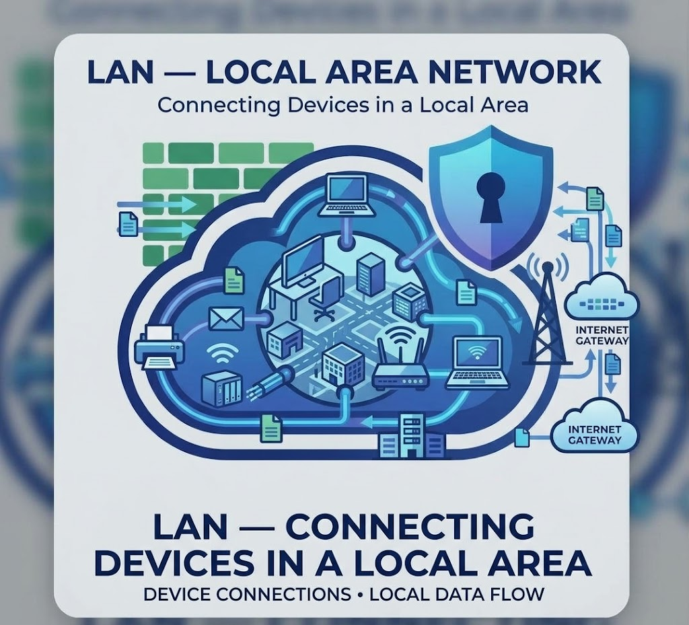
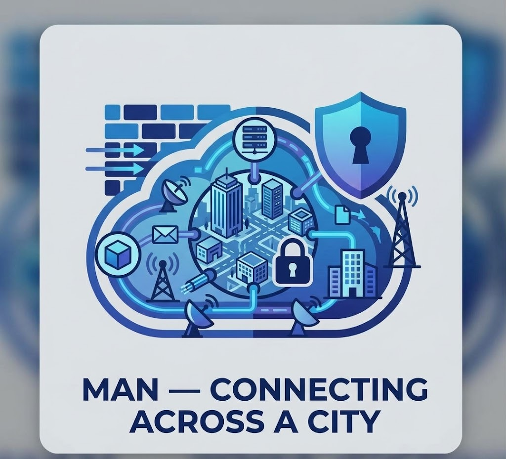
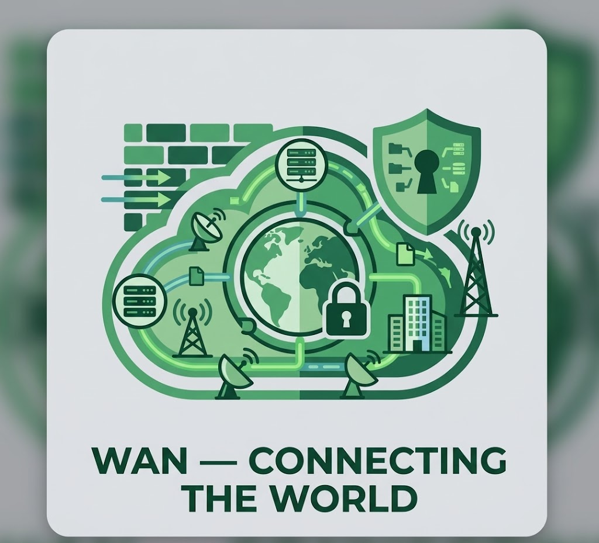

What Exactly Is Computer Network?
Imagine having computers, smartphones, printers, and other devices connected
so they can communicate and share information with each other. That’s the
power of computer networking. A computer network allows devices to exchange
data, share resources, access the internet, and communicate through wired or
wireless connections. From sending messages and sharing files to accessing
websites and supporting businesses, networks quietly connect much of the
digital world around us. It’s not just about connecting devices — it’s about
making communication, information sharing, and digital services faster and
more efficient.
Behind the Network: How Does It Work?
Computer networks work by connecting devices through wired or wireless
connections. Data is transmitted between devices using networking equipment
such as routers, switches, and access points. Communication protocols help
devices understand how to send and receive information. When you access a
website, send a message, or share a file, the network transfers data between
your device and its destination.
| Step |
Process |
Description |
| 1 |
Connect a Device |
A computer, smartphone, or other device connects to
the network using a wired or wireless connection.
|
| 2 |
Send a Request |
The device sends data or a request through the network
to communicate with another device or access a service.
|
| 3 |
Network Devices Process Data |
Devices such as switches and routers direct data to
the correct destination across the network.
|
| 4 |
Receive the Data |
The destination device receives and processes the data,
allowing users to access information or services.
|
The Different Faces of Computer Networks
LAN — Connecting Devices in a Local Area

Imagine several computers and devices connected within a limited area.
That’s the idea behind a Local Area Network (LAN). LANs connect devices
in places such as homes, schools, offices, and computer laboratories,
allowing users to share files, printers, applications, and internet
connections. Fast, reliable, and efficient, LANs make communication
and resource sharing easier within a local environment.
MAN — Connecting Across a City

What if a network needs to connect devices across a larger area, such as
a city? That’s where a Metropolitan Area Network (MAN) comes in. A MAN
connects multiple LANs across a city or large campus, allowing
organisations and users to share information and network resources over
a wider area. It provides greater coverage while maintaining efficient
communication between connected locations.
WAN — Connecting the World

What if devices need to communicate across different cities, countries,
or even continents? That’s where a Wide Area Network (WAN) comes in.
WANs connect multiple networks over large geographical areas, allowing
users and organisations to communicate and share data across long
distances. The internet is one of the largest examples of a WAN,
connecting networks around the world.
What Makes Computer Networks So Powerful?
- Easy Communication — Connect devices and users to exchange information quickly.
- Resource Sharing — Share files, printers, applications, and internet connections.
- Fast Data Transfer — Move information efficiently between connected devices.
- Wide Connectivity — Connect devices across homes, schools, offices, cities, and countries.
- Reliable Communication — Keep devices and systems connected for smooth information exchange.
- Centralised Management — Monitor and manage connected devices and network resources more efficiently.
Things to Know About Computer Networks
Computer networks make communication and resource sharing easier, but it’s
important to understand a few key factors. Network security, reliable
connections, proper hardware, data privacy, and network maintenance can all
affect network performance. Understanding these considerations helps you
build and use computer networks safely, efficiently, and reliably.